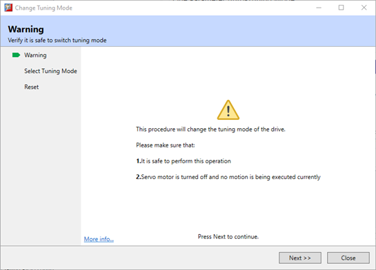
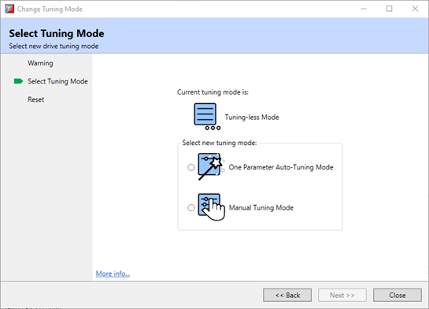
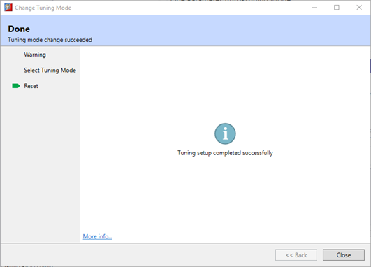

The Change Tuning Mode function is used to calculate swap between the three supported tuning modes. This tool is available in all tuning modes
Selecting this function will launch a wizard which will guide the change of tuning mode.
|
|
Stop the Motor running before performing this function. |
The wizard will perform all necessary parameter changes, synchronise Motion Perfect and then re-start the drive to allow the change of tuning mode to take effect.
|
Parameter |
Setting |
Meaning |
Classification |
|
Pn100 |
1 [Default] |
Tuning-less |
Function |
|
2 |
Reserved |
||
|
3 |
One-Parameter Auto-Tuning |
||
|
4 |
Reserved |
||
|
5 |
Manual tuning |
The wizard sequence is:


